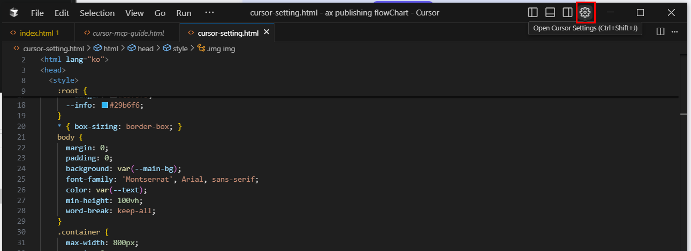
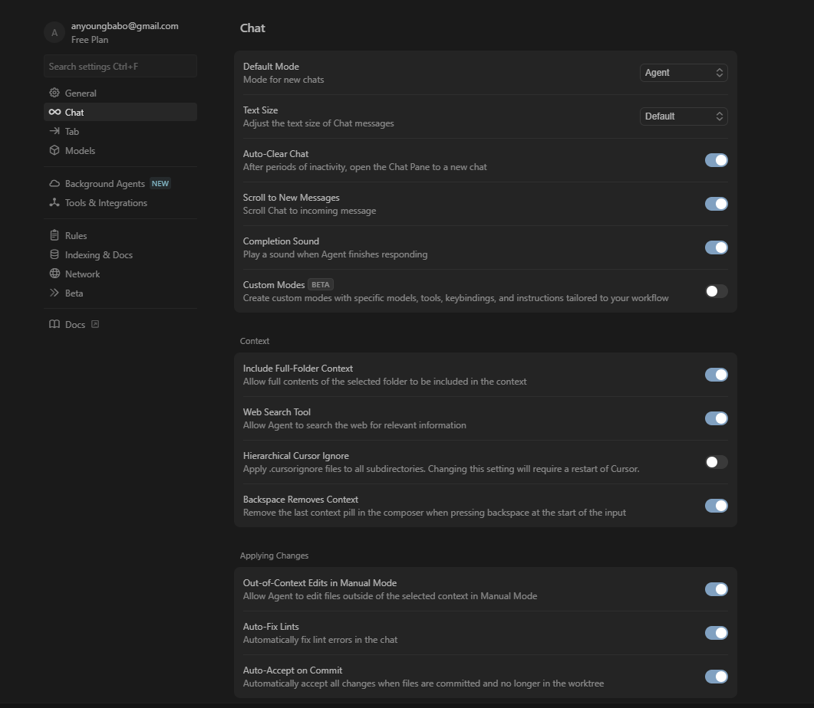
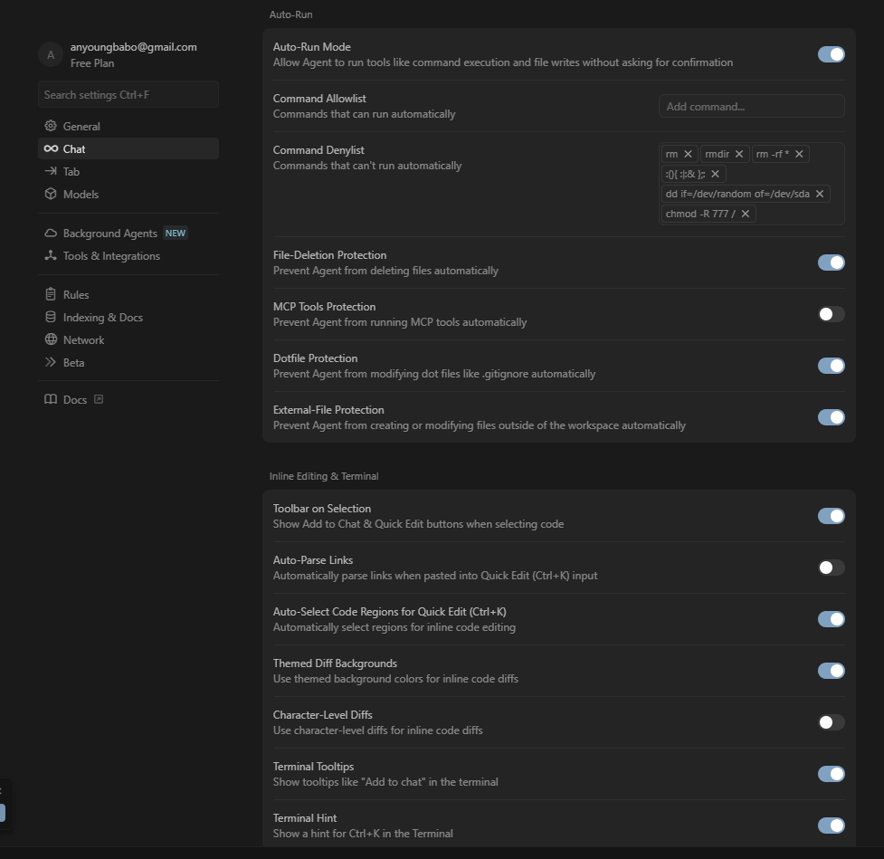

🧩 Cursor AI 기본 세팅 가이드
처음 시작하는 분들을 위한 실전 세팅 & 활용법
01. 시작하기
- Cursor Setting 접속
→ 좌측 하단 또는 명령어 팔레트(Ctrl + Shift + P)에서 "Cursor Settings" 검색 후 진입

02. 추천 AI 모델
- Claude 최신 모델 추천
→ 더 자연스럽고 긴 코드 이해에 강함
03. 확장 프로그램 설치 & 단축키 안내
사이드바 열기
Ctrl + B
확장 탭 열기
Ctrl + Shift + X
✅ 추천 확장 프로그램
Live Server
- HTML/CSS/JS 수정 시 브라우저 자동 새로고침
- 하단 포트 영역 클릭으로 실행
ftp-simple
- FTP 서버와 VS Code 직접 연결
- FileZilla 없이 서버 파일 열기/수정 가능
Live Sass Compiler
- SCSS/SASS 파일을 실시간으로 CSS로 자동 컴파일
Mithrill Emmet
- Mithril.js 스타일 Emmet 문법 자동완성 지원
04. 주요 단축키 정리
🔧 기본 기능 관련
| 기능 | 단축키 |
|---|
| 사이드바 열기/닫기 | Ctrl + B |
| 버전 관리(Source Control) | Ctrl + Shift + G |
| 확장 기능(Extensions) | Ctrl + Shift + X |
| 디버그(Run and Debug) | Ctrl + Shift + D |
🤖 AI 관련 단축키
| 기능 | 단축키 |
|---|
| Ask AI 창 열기 | Ctrl + I |
| 선택 영역 수정 요청 | Ctrl + Shift + I |
| 코드 설명 요청 | Ctrl + Shift + / |
| 리팩토링 / 코드 생성 요청 | Ctrl + Alt + I |
| AI 자동완성 트리거 | Ctrl + Shift + Space |
05. Cursor 업데이트 관련 주요 설정
🔄 Auto-Run 관련
- Auto-Run Mode: 사용자 승인 없이 명령 실행 가능
- Command Allowlist / Denylist: 특정 명령 실행 허용 또는 차단
- File-Deletion Protection: 자동 파일 삭제 방지
- MCP Tools Protection: MCP 도구 자동 실행 차단
- Dotfile Protection: .gitignore 등 설정 파일 보호
- External-File Protection: 워크스페이스 외부 파일 자동 변경 차단
☁️ Background Agents (Beta)
- Git 저장소 내에서 클라우드 기반 에이전트 실행
- 코드 검사, 반복 작업 자동화 가능
* 최신 업데이트 관련 cursor setting ver.25.06.15

